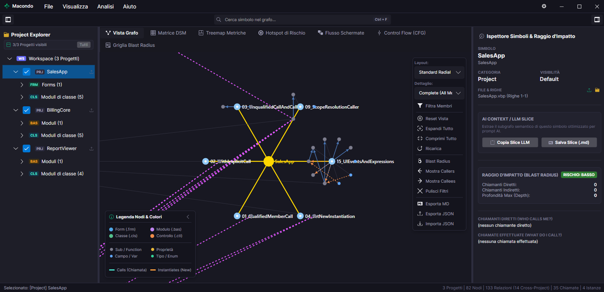

Analizzatore semantico e calcolo del Blast Radius per codice legacy, attualmente con supporto completo a Visual Basic 6.0. 100% offline, privacy assoluta, pronto per la migrazione con modelli AI.

Parsing AST completo di file .vbp, .frm, .bas, .cls e .ctl. Esplora gerarchie e chiamate con 4 algoritmi di layout ottimizzati per grandi progetti.
La matrice Blast Radius traccia ricorsivamente ogni chiamante a monte. Riconosci prima di toccare il codice quali schermate UI o classi verranno impattate.
Estrai Repo Map e contesti semantici compatti in formato Markdown pronti per Claude, ChatGPT, Gemini, Copilot, ecc. per guidare la riscrittura in C#/.NET o linguaggi moderni.
Nessun abbonamento, nessuna licenza a pagamento, nessun limite artificiale. Uno strumento creato per la community.
Funziona al 100% in locale sul tuo computer. Nessun sorgente o metadato viene mai inviato all'esterno o sul cloud.
Cache persistente ultra-veloce su disco: apri progetti enterprise con centinaia di moduli in una frazione di secondo.
Scarica direttamente l'eseguibile Macondo per Windows. Nessuna installazione richiesta, avvio istantaneo.
Scarica Macondo.exe (Windows x64)